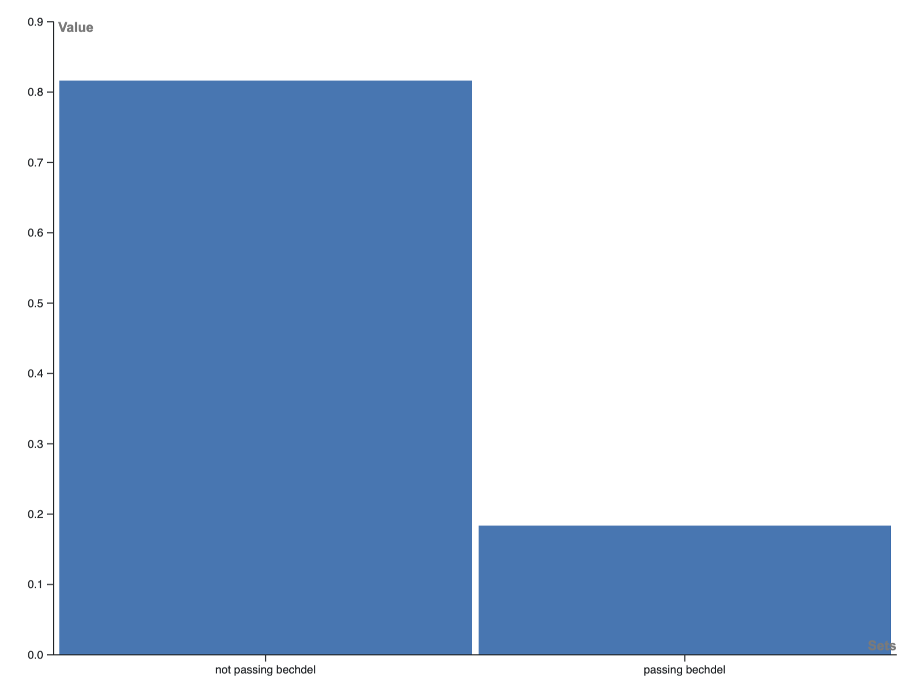
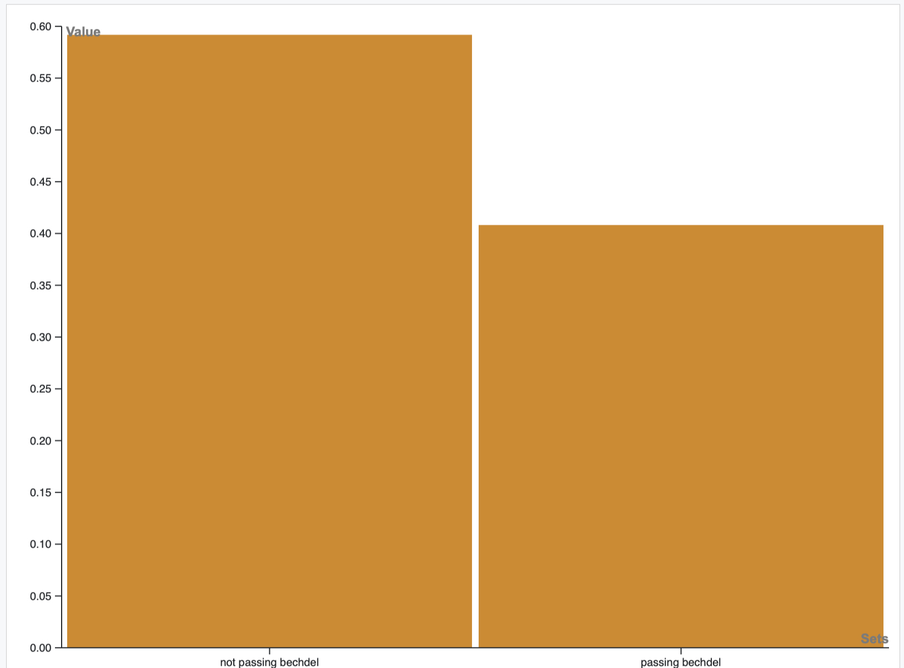
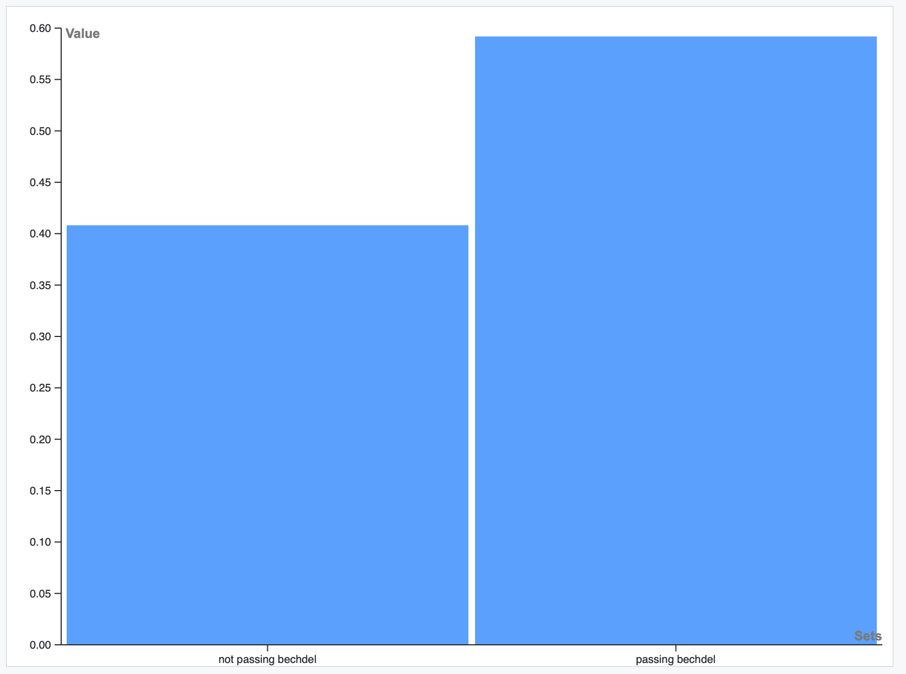
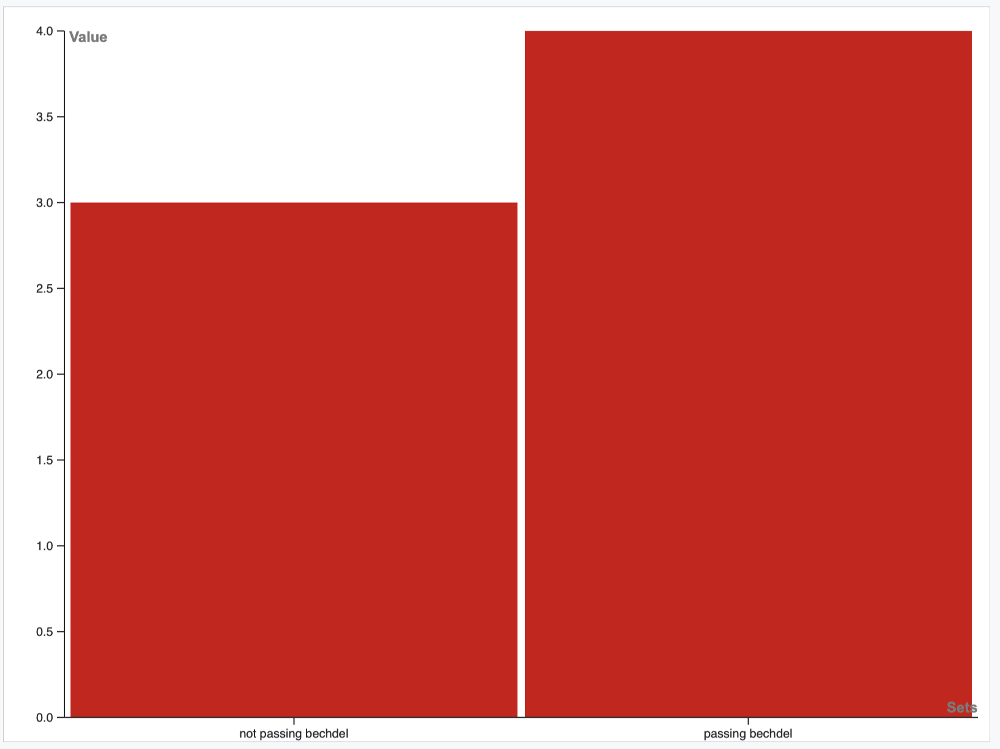
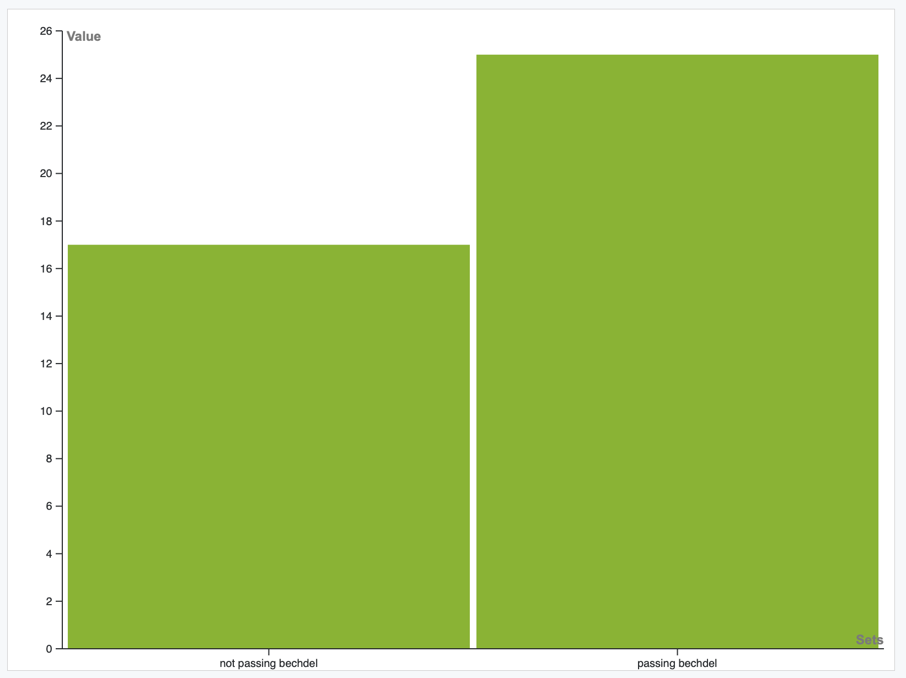
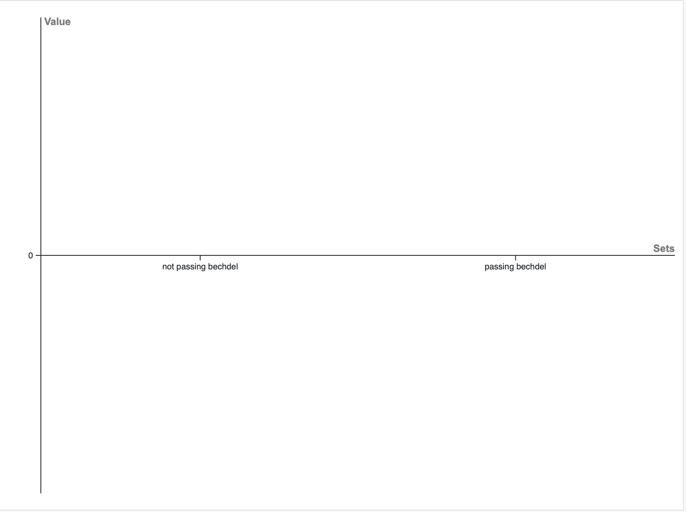
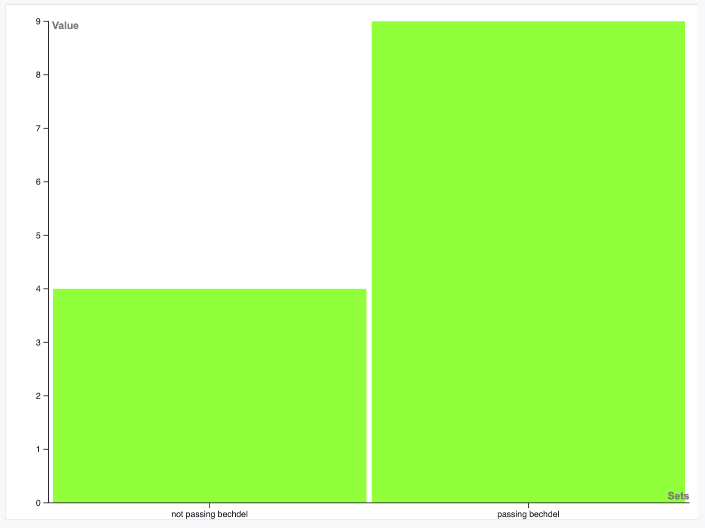
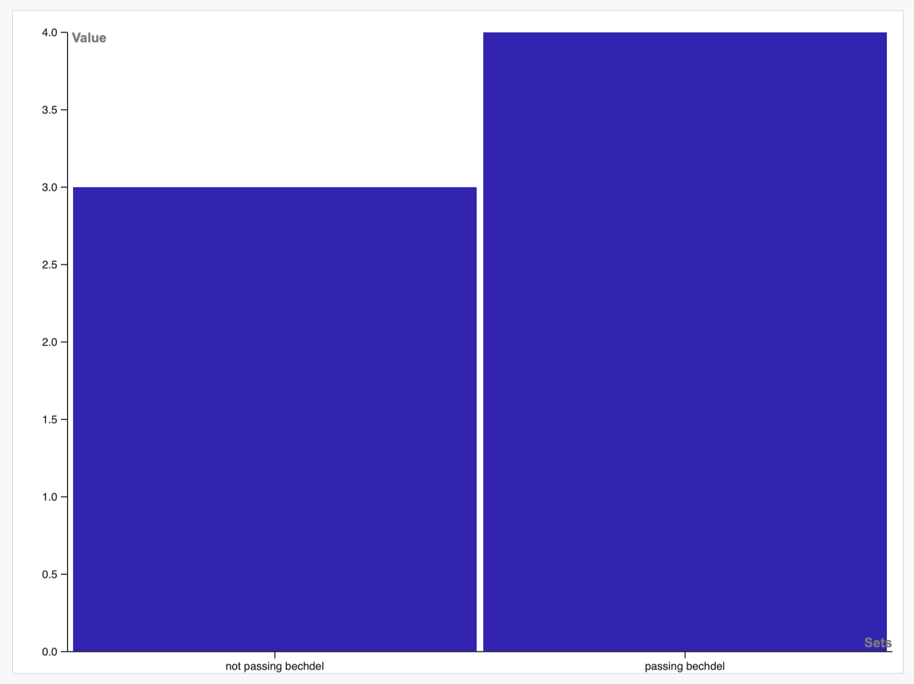
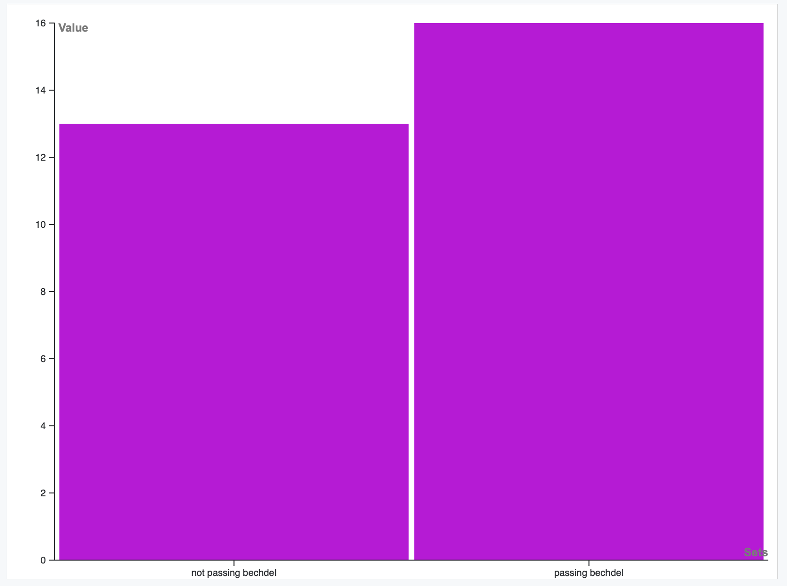

Before I get into the exploration of my midterm, I would like to mention that this website was created with the template that I have created for articles in
my own personal website, it was built from a template of a website, the creator of which is HTML Codex
and links to them can be found at the bottom of this site.
The reason why I decided to do it this way is purely due to presentation, I wanted it to look pretty since I feel proud of the work that I made, all of the words in this midterm are my own and while there is a heavy use of the template,
it has been heavily modified so that it meets my personal needs
Introduction
For my midterm project I wanted to explore the Uncanny Xmen data. Whilst I at first did not know what I wanted to do with the data I soon realised that in the project
folder of the Github there is a file called xmen_bechdel, in it the authors of this project explore how many of the comics pass the
bechdel test and in the "characters" file there is data of how many times a character kills a non-human and a human character in a given issue and also of which characters are crying those same given issues.
As such I wanted to explore how these 2 factors (characters killing and characters crying) were affected by a given issue passing the bechdel test, essentially that if a test passes (or not) the bechdel test, then one of the two actions is more likely to happen or not.
My main hypothesis thus was that if an issue passes the bechdel test, then that issue is more likely to have no kills nor tears.
As a note for this whole webpage, whenever speaking about Issue with no further explanation of "This is the issue that I faced" I am referring to a comic issue, ergo a comic book.
Methods
As a prospective CS major the first method that came to mind was to use a SQL database to relate the bechdel test data and the characters data easily since I could create 2 relations, one with the data from each and join them with a where on the field "issue" which is common to both.
And then do the desired selections, whether the bechdel test was passed or not and how that relates to the tears field, all of the files that were created for this, including queries, can be found here.
However once I started doing that I quickly realised a couple of things:
-
There is a lot of extra data in the bechdel test data file, mainly the data that the people that created the project used to make their conclusions which relate which editors and authors pass the bechdel test the most often, but also the bechdel test data for all the issues of
the uncanny Xmen comics.
-
Some numbers were not formatted as numbers, particularly the issues were not and the kills and tears often had * in their fields to signify special cases (such as issue 135 where Jean kills all the creatures that were on the D'Bari system)
-
There was a lot of data in the characters data file that I did not need
As such I decided to manually go through the data files and make the appropriate changes, I deleted all the extra rows from the bechdel file and extra columns, keeping only issues 100-149 and whether or not they pass the test.
The same was done for the characters data file, where I only kept the issue, character (changed it to the spanish word for it because character is a reserved word in SQL), number of kills humans, number of non-human kills and instance of tears. Additionally I manually created the totalkills column in which I wrote down the result from adding non-humans and human kills

Graph of issues that have kills in them

Graph of issues that have no kills in them
After a bit more cleaning related to how the queries outputted results to the files, where the group by would create an extra empty row both on tears and crying which would need to be deleted.
Because the data did not seem too daunting, once I was able to export it I read through it and deleted the rows that were wrong.
Analysis
The main steps that I took for analysis where presented before, where I looked at the data and decided which aspects were interesting to look at. Once that was done and I had all my data in a readable way
I used Excel to examine the data by means of doing math to calculate the percentage of issues that have kills in them that pass the bechdel test (or not). For the rest of the data I thought it best to analyse the amounts of
issues with a given metric are, the reason for that is that data is in my opinion better read this way since we can compare the amounts between the different metrics such as "No bechdel, there are tears and there are no kills"
or "Passes Bechdel, there are kills and tears". The reason for this is that it helped me achieve the conclusions/results which I achieved and that it allows for better graphical representation.
Presentation
For my presentation I decided to create a series of graphs (created with
Rawgraphs.io),that explore the different metrics that I felt would provide good insights into the Uncanny Xmen comics in terms of
how women are represented and what metrics might infer that a particular issue is going to pass the bechdel test.
Because there are 8 different types of data that I have (excluding how many issues pass the test as that one is right next to this paragraph), I decided to create 9 different graphs (in total), whilst some where seen before, except for the percentages of issues that pass the test, the rest are portrayed below here, because at the end of the day what matters in my opinion is the results that come from the presentation.
A note on the presentation is that the graphs are created at different scales, the reason for this is that some of the graphs are really tiny (particularly the first two since they represent percentages) and some really big (like the amount of issues with no tears), thus the graphs are meant to be taken more as a representation to see "This metric is affected this way by the bechdel test",
though something like "Oh this metric is seen in x amount of issues" is also able to be explored.

Graph of all issues, to see whether they pass the test or not
Graphs
Graph of issues that have kills in them
Graph of issues that have no kills in them

Graph of issues that have tears in them

Graph of issues that have no tears in them

Graph of issues that have kills and tears in them

Graph of issues that have kills and no tears in them

Graph of issues that have no kills but have tears in them

Graph of issues that have no kills and no tears in them
Additionally here is the resulting table with all the data that is used to create those graphs
| Bechdel Status |
% of issues |
%issues with kills |
% Issues with No Kills |
# of Issues with tears |
# issues with no Tears |
# with kills and tears |
# with kills no tears |
# no kills with tears |
# no kills no tears |
| passing bechdel |
59% |
18% |
41% |
4 |
25 |
0 |
9 |
4 |
16 |
| not passing bechdel |
41% |
82% |
59% |
3 |
17 |
0 |
4 |
3 |
13 |
Conclusions:
*These conclusions are based on the data that I had and are not statistically representative of the universe since I know for a fact that I do not have a significant amount of data in terms of the
number of comics there are (600).
With all of this data that I just presented you with, I can conclude an amount of things, however instead of going into each, I want to make a generalization based on all of the data.
The reason for that is that I want to answer the question of whether my hypothesis was right or not and to do so I feel the need to make it a singular answer.
If you recall from earlier my hypothesis was that "...if an issue passes the bechdel test, then that issue is more likely to have no kills or tears."
Based on that, from analysing the results presented before, we can say that this hypothesis was correct! There are more comics with no kills nor deaths that pass the test, vs those that do not pass the test under the same metrics,
an issue that has kills is a lot less likely to pass the test than not and issues that do not have tears tend to pass the test more often than not!
Significance
I think the main pitfall with my approach comes in the form of the amount of data analysed, the reason for this is that one there are not that many comics in the dataset that have data other than the bechdel test
and so I think that it is important not to generalise what I found for all Uncanny Xmen comics since we dont know to be the case, and I think that potentially generalisng the data found here is wrong.
Additionally I think that the main way that this approach helps is that at the end of the day with more data this could be used to study the history and evolution of comics, this dataset explores the a relatively small
part of the first Cleremont run, this run went on from 1975 to 1991, the bechdel test was coined in '85 and with more data we could potentially go "Okay this is how comics evolved, these are the things that were normal
xyz years ago and these are the things that affected how a comic was created and what things affected its creation." In a way this approach could be the groundwork for a much bigger exploration of the comics industry as a whole
has shifted and what things we value more as a society at a given time and more importantly how what is represented in these pages affect the way that we view comics as a medium.
To summarize, this approach that I used allows us to examine a given medium in a way that we can ground it in a given point in history so that we can better examine how a given society has grown.